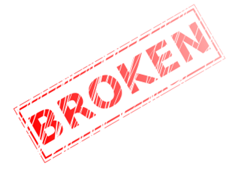
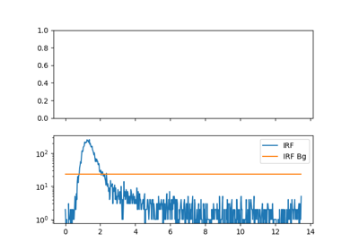
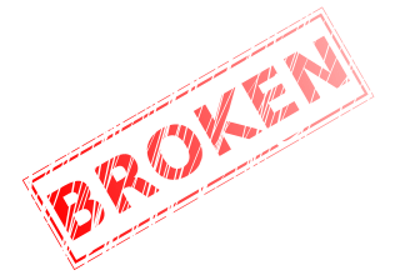
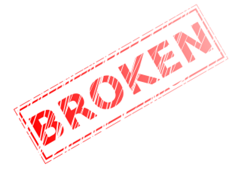
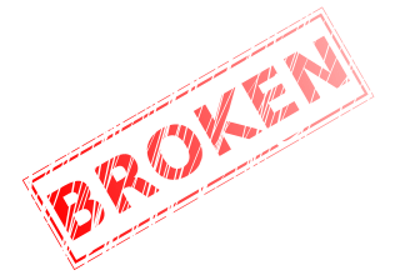
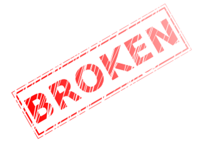
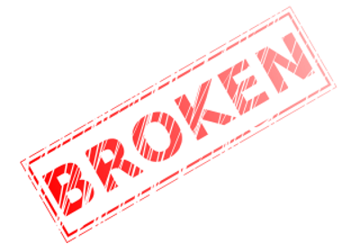
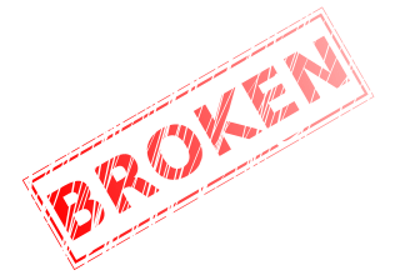

Fluorescence decay applications.

MLE mini example¶

Fluorescence decay analysis - 3¶

Pile-up¶

MLE - Fit23¶

Fluorescence decay analysis - 2¶

Benchmark MLE¶

Convolution benchmark¶

Fluorescence decay analysis - 1¶
Gallery generated by Sphinx-Gallery